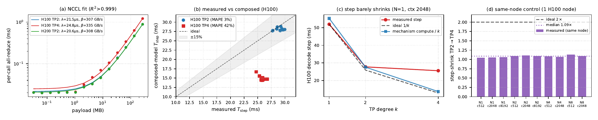

To predict one decode step under tensor parallelism, the natural model shards the single-GPU compute so it falls as one over k, and adds the all-reduce cost the shards must pay. The all-reduce term, calibrated in isolation, is faithful. The composition is not: it is accurate at TP-2 and fails at TP-4, because the measured step barely shrinks as GPUs are added. This page presents that negative result as the contribution and localizes the missing term.
To serve a 70B model, tensor parallelism splits each layer across $k$ GPUs, and after each attention and MLP block the shards exchange their partial results in a collective all-reduce. The natural latency model adds two terms: the single-GPU compute divided by $k$, because each GPU now does a fraction of the work, plus the all-reduce cost the recombination requires. This study calibrates the all-reduce term on its own and confirms it is faithful, then tests the full composition against real eager-mode vLLM decode measurements on H100 and H200. The consequence is a primarily negative result alongside one solid positive component.
The closed form $\lambda + \tfrac{2(k-1)}{k}\,b/\beta$ fits a standalone NCCL message-size sweep to a global $R^2$ above 0.999 on all three configurations, recovering a per-call latency of 21 to 25 microseconds and an effective ring bandwidth of 307 to 335 GB/s, with no fit to any serving trace. This term is the part the paper recommends reusing.
On the trusted H100 grid the additive composition is accurate at TP-2 (2.86% MAPE) but fails its pre-registered 15% kill-switch at TP-4 (42.3% MAPE), under-predicting all twelve TP-4 cells by 32 to 45 percent. The paper does not retro-fit a correction and does not present the TP-2 pass as a working model.
Subtracting the measured communication term and the predicted one-over-k compute leaves a per-step residual that is not constant in $k$: about minus 2.5 milliseconds at TP-2 but an implied plus 8.0 milliseconds at TP-4, a roughly ten-millisecond upward shift. This is presented as evidence, consistent with a non-shrinking eager host or dispatch cost, not as a proven mechanism.
Because the original H100 TP-2 and TP-4 grids ran on different nodes, a dedicated single-node control measured both degrees back-to-back on one H100 node. The failure reproduces, with a step-shrink of 1.08 times and a TP-4 MAPE of 44 percent, so the negative result is a genuine TP-scaling effect and not a slow or co-tenanted TP-4 node.
To read the result, one needs a clear picture of where time goes in a single tensor-parallel decode step. This section builds that picture in plain terms before any equation: what tensor parallelism does to the work, what the all-reduce is for, and why one might reasonably expect the step to shrink as GPUs are added. The expectation built here is exactly the one the measurement later overturns.
A BF16 Llama-3.1-70B checkpoint is roughly 140 GB of weights, well past the 80 GB of an H100 and the 141 GB of an H200 once activations, the KV cache, and CUDA workspace are accounted for. Tensor parallelism (TP) is therefore not an optional knob; it is the precondition for serving the model at all. In TP each transformer layer's projection matrices and attention heads are split across the $k$ GPUs, so every GPU holds a slice of the weights and computes a slice of the result. Because the slices are partial, they must be summed back together before the next sub-layer can proceed — a collective all-reduce over the $k$ ranks. A Llama-3.1-70B layer performs two such all-reduces (one after attention, one after the MLP), and the model has 80 layers, so a single decode step issues 160 all-reduce collectives on the critical path. The intuition the additive model encodes is that splitting the weights across twice as many GPUs should halve the per-GPU compute, while the all-reduce adds a comparatively small recombination cost on top.
The measurements are taken in eager mode — the execution mode in which the Python runtime issues each kernel and each collective launch individually on every step rather than replaying a captured CUDA graph. This matters because in eager mode the kernel-dispatch and collective-launch work sits on the critical path and is paid afresh on every decode step. When the GPU count doubles, the compute slice each GPU owns may halve, but the number of launches the host must issue does not fall, and the 160 collective launches per step are if anything more numerous to coordinate. The paper does not assert in advance which component dominates; it builds the additive model on the assumption that the non-communication remainder shrinks with $k$ and then asks the measurement whether that assumption holds.
The method has two halves that mirror the two terms of the model. The first is the closed-form all-reduce cost, calibrated in isolation so the communication term is never tuned against serving data. The second is the full additive composition, confronted with a measured eager-mode decode grid through a pre-registered kill-switch.
The communication cost of a ring all-reduce over $k$ ranks is captured by a textbook model with two physical constants: a fixed per-call latency $\lambda$ that every collective pays once, and a bandwidth-limited transfer time that depends on the message size $b$ and the effective ring bandwidth $\beta$. The constants are recovered by a standalone NCCL microbenchmark that sweeps the message size from 32 KiB to 256 MiB on the same NVLink allocation the 70B run uses, so the bandwidth that calibrates the term is the bandwidth the serving step actually sees.
Fitting Equation (1) to the message-size sweep recovers a per-call latency $\lambda$ of 21 to 25 microseconds and an effective ring bandwidth $\beta$ of 307 to 335 GB/s, with a global $R^2$ above 0.999 on all three configurations. One honest caveat applies: the high global $R^2$ is dominated by the large messages in the sweep, and at the 32 to 256 KiB payloads a 70B decode step actually produces, the linear fit over-predicts the raw per-call NCCL time by about 7 to 10 percent on H100 TP-2 and by about 22 to 27 percent on H100 TP-4. The term is a faithful first-order standalone description of the collective, with a known small-message bias rather than a perfect match in the decode-relevant regime.
The composition under test takes the single-GPU compute model, divides the sharded shapes by $k$ so the compute term falls as one over $k$, and adds the two all-reduces per layer across all 80 layers. A single per-step constant $R_0$, calibrated from one TP-2 cell, stands in for any fixed dispatch floor. The kill-switch was specified before the decode measurements were read: the composition passes if its predicted TP scaling matches the measured step within 15 percent MAPE, and otherwise the paper reports the negative outcome without retro-fitting a correction.
The question mark over the equality is the whole paper. Equation (2) is the hypothesis, not a result, and the kill-switch is the instrument that decides it. Because the all-reduce term is calibrated independently and the per-step constant is fit from a single cell rather than tuned per configuration, a failure cannot be blamed on an over-flexible network model or on hidden free parameters; it has to come from the structural assumption that the one-over-$k$ compute term carries the step. The per-decode-step latency is obtained by a difference method — the wall-clock time of a 33-token generation minus the wall-clock time of a 1-token generation, divided by 32 — and fragile cells, where the 1-token wall spills extra time, are gated out.
Three pre-specified claims resolve here: one passes, one fails as the headline, and the third explains the failure. The figure below shows all four faces of the result at once: the NCCL fit (a), measured versus composed step (b), the step that barely shrinks with TP degree (c), and the same-node de-confounding control (d).

(a) Standalone NCCL all-reduce: the closed form fits the message-size sweep to R² > 0.999 (λ ≈ 21–25 µs, β ≈ 307–335 GB/s). (b) Measured vs composed step on H100: TP-2 lands inside the ±15% band (MAPE 3%); TP-4 sits far below the diagonal (MAPE 42%). (c) The H100 decode step barely shrinks from TP-2 to TP-4 — measured (red) stays near 26 ms while ideal 1/k (dashed) and the mechanism compute/k (blue) fall toward 14 ms. (d) Same-node control: the measured TP-2→TP-4 step-shrink is a median 1.09× against the ideal 2×.
The residual of the measured H100 TP-2 step over the predicted sharded compute is small and positive (0.14 to 1.87 ms across batch sizes at context 2048), the same order as the microbenchmark-predicted communication time of about 3.45 to 3.51 ms. At TP-2 the communication term is only about 11.7 to 12.5 percent of the measured step. The all-reduce fit is a faithful, serving-trace-free description of the collective cost, recommended for reuse, with the disclosed small-message over-prediction as its one known limitation.
On the clean H100 grid the composed model achieves a MAPE of 2.86 percent at TP-2 but 42.3 percent at TP-4, under-predicting every one of the twelve cells by 32 to 45 percent. The table below lists the per-decode step at context 2048 for the two configurations, alongside the model's prediction and the signed error.
Scroll right → for predicted communication, full prediction, and signed error.
| Config | N | Measured (ms) | Pred. compute (ms) | Pred. comm (ms) | Full pred. (ms) | Error (%) |
|---|---|---|---|---|---|---|
| H100 TP-2 | 1 | 27.77 | 27.62 | 3.45 | 27.77 | +0.0 |
| H100 TP-2 | 2 | 29.64 | 27.77 | 3.46 | 27.92 | −5.8 |
| H100 TP-2 | 4 | 29.46 | 28.06 | 3.48 | 28.23 | −4.2 |
| H100 TP-2 | 8 | 29.24 | 28.64 | 3.51 | 28.84 | −1.3 |
| H100 TP-4 | 1 | 25.60 | 13.81 | 3.98 | 14.49 | −43.4 |
| H100 TP-4 | 2 | 25.97 | 13.89 | 3.99 | 14.57 | −43.9 |
| H100 TP-4 | 4 | 26.74 | 14.04 | 4.01 | 14.74 | −44.9 |
| H100 TP-4 | 8 | 25.91 | 14.33 | 4.06 | 15.09 | −41.8 |
The table makes the mechanism visible. At TP-2 the predicted compute alone already nearly matches the measured step, so the small communication term completes an accurate prediction. At TP-4 the model halves the predicted compute to about 14 ms, but the measured step holds near 26 ms, so the full prediction lands more than 40 percent low on every cell. The communication term is not the problem; the predicted compute saving is the part that fails to materialize.
The mechanism model predicts the per-GPU compute halves from TP-2 to TP-4, falling from about 27.6 to about 13.8 ms. The measured step does not follow: the raw H100 TP-2 to TP-4 step ratio is only about 1.12, far from the ideal 2.00. The bars below contrast the step the model expects against the step actually measured at the cleanest cell, making the gap concrete.
The compute saving the model predicts (dashed) never materializes: the measured TP-4 step (25.6 ms) stays close to the TP-2 step (27.8 ms), a 1.12× shrink against the ideal 2×.
Subtracting the predicted communication term and the one-parameter per-step constant exposes the shape of the gap. The implied per-step residual is not constant in $k$: about minus 2.5 ms at TP-2 but an implied plus 8.0 ms at TP-4, so the constant that fits TP-2 does not transfer to TP-4. The additive decomposition is structurally insufficient because it assumes a per-step term fixed in $k$, while the data say that term shifts by roughly ten milliseconds as $k$ grows. This non-transfer — and not the communication term — is the negative result.
The original H100 TP-2 and TP-4 grids ran on different nodes, leaving one alternative reading open: the TP-4 under-prediction could be a slow or co-tenanted TP-4 node rather than a TP-scaling effect. To settle this, a dedicated same-node control measured TP-2 and TP-4 back-to-back on the single H100 node, with the identical NCCL sweep and 70B decode grid. The original failure reproduces: the composed model again tracks TP-2 to a MAPE of 2.2 percent and again fails hard at TP-4 with a MAPE of 44.4 percent, under-predicting every clean cell by 42 to 46 percent. Across the ten clean same-node cells the measured step-shrink is only about 1.08 times against the ideal 2.00, and the implied per-step residual makes the same shift it does cross-node (about minus 2.6 ms at TP-2 to about plus 8.7 ms at TP-4). Because there is only one node, the TP-4 failure cannot be cross-node variance, so the failure of the composition is a genuine TP-scaling effect.
Same-node step-shrink TP-2→TP-4: the median measured 1.08× is barely above no shrink at all, far below the ideal 2× the one-over-k compute term assumes.
The value of this study is that it is a faithful negative characterization rather than a tuned model. It tells the next person where not to spend effort, hands them one reusable term, and localizes the missing physics precisely enough to aim the follow-up experiment.
A practitioner extending a single-GPU decode model to tensor parallelism would naturally invest in a more detailed network model, because communication is the visibly new cost. This study shows that investment is misplaced for eager TP decode: the all-reduce term is already faithful and accounts for only about an eighth of the step at TP-2, while the 42 percent error at TP-4 comes entirely from a non-communication per-step term the additive form assumed would shrink with $k$ and does not. The reusable artifact is the refit-free all-reduce model.
The roughly ten-millisecond upward shift of the per-step residual is reported as evidence rather than a proven mechanism. It is consistent with a non-shrinking per-step host or dispatch cost — in eager mode the 160 collective launches and the kernel dispatch sit on the critical path and do not fold away when ranks are added — but it is only one explanation among several. No Nsight Systems traces were collected, so the paper localizes the residual and names the candidates without claiming a single proven cause; a CUDA-event or Nsight-timed per-step cross-check is the framed follow-up.
Two companion deepdives test the single-GPU version of this mechanism model along orthogonal axes — execution mode (CUDA graphs) and model family (fit-free transfer). Deepdive #3: CUDA-Graph capture · Deepdive #4: fit-free transfer
The conclusions are deliberately bounded, and the boundaries are part of the contribution. The negative result is robust within its scope, and the scope is stated plainly so the claim is neither over- nor under-read.
The decode conclusion holds for Llama-3.1-70B in BF16 on PACE H100, at TP-2 and TP-4, in eager mode, over the gated grid where the difference-method subtraction is clean, with the same-node control confirming the effect on a single node. The H200 contributes only its NCCL fit. The central finding — that the additive one-over-k composition does not predict eager TP-decode latency because the per-step term does not shrink with k — is the part expected to generalize beyond this grid, while the absolute levels are specific to this model and these SKUs.